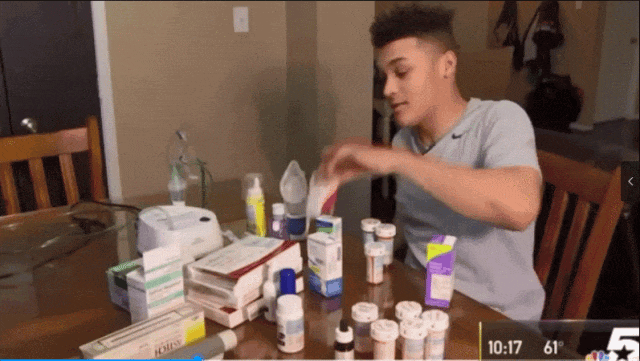
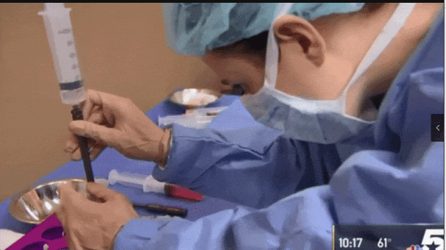
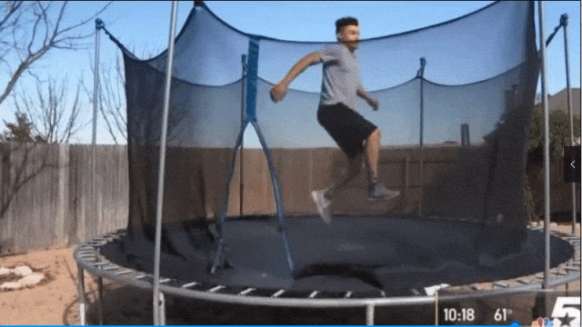

别等身体亮红灯！百年春自体干细胞，为您定制细胞级抗衰防线
2026-03-04

About Us
关于百年春
1 被哮喘绑架的青春：8年住院史背后的绝望
窒息感、24小时不离身的药物、被迫缺席的青春...
这曾是18岁肯顿·克伦肖的日常。然而，一次自体干细胞治疗，让他的生命轨迹彻底逆转——三个月零发作、药物大幅减少，甚至燃起了"永远摆脱哮喘"的希望。这不仅是医学的奇迹，更是自体干细胞在呼吸疾病领域的里程碑突破！

△克伦肖必须随身携带很多药物，却仍无法有效控制哮喘
18岁的肯顿·克伦肖比同龄人更熟悉医院消毒水的气味。自确诊重症哮喘以来，他已连续在医院度过8个圣诞节。即便随身携带十几种药物，凌晨2/3点突发的喘息仍会将他从梦中拽醒。"走路都可能诱发发作"，这样的恐惧让他被迫放弃社交、运动，甚至正常行走。
"我的身体里仿佛埋着定时炸弹。哮喘控制了我的生活。"
克伦肖坦言。为了脱离这种状态，他尝试过无数种疗法，但都以失败告终，传统药物仅能短暂缓解症状，长期激素治疗带来的副作用更令他身心俱疲。直到遇见自体干细胞治疗方案，这场持续18年的战役终于迎来转机。
2自体干细胞：从自体内唤醒的"修复军团"
（1）自体干细胞具有自我更新及多向分化能力，在特定条件下，能够跨胚层向各类细胞分化，定向分化成肺组织细胞，达到修复受损的气道黏膜的功能；
（2）自体干细胞还具备旁分泌机制，所分泌的各类生物活性因子、细胞因子和趋化因子等物质，会循着 “趋炎性” 自动奔赴免疫失衡的战场，调节免疫、对抗体内炎症；
（3）自体干细胞回输后可智能识别过度活跃的免疫细胞，抑制气道炎症风暴；
而自体干细胞无需配型、零排异反应，安全性远超传统疗法。

接受治疗后克伦肖的转变惊人，三个月颠覆八年：从药罐子到自由呼吸！
不再需要成堆的药，发作频率也从每天4-6次呼吸治疗转变为三个月都没再哮喘发作。
"那种感觉，就像我从来没有哮喘一样完美。"克伦肖激动表示。更令人振奋的是，疗效预计可持续1-2年甚至更久。

在根据目前国际临床研究中，克伦肖并非独特的幸运者。存在很多关于“自体干细胞或成哮喘克星”的突破性研究印证。
近年多项研究揭示干细胞治疗潜力：
中山大学研究（2014）：自体骨髓干细胞显著抑制哮喘患儿Th17细胞增殖，调节免疫失衡
美国临床案例（2023）：干细胞治疗后患者急救药物使用减少90%，疗效持续6个月
数据显示，我国4570万哮喘患者中，约30%属于药物难控型。而自体干细胞通过 源头调控免疫+组织修复 的双重机制，有望突破传统疗法的治标困局。

点击蓝字
关注我们